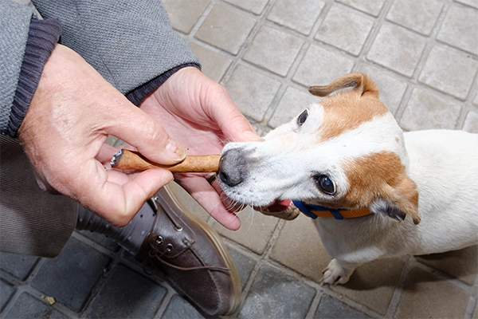
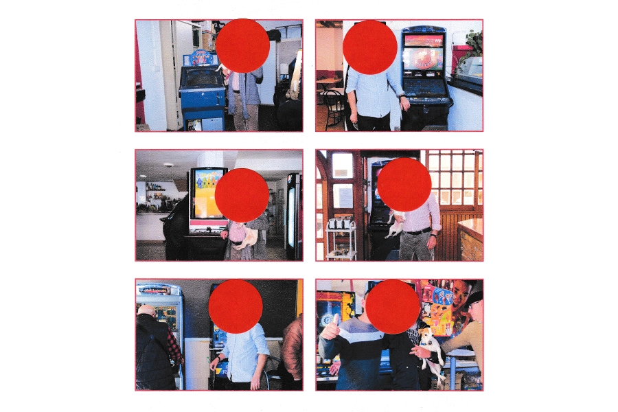
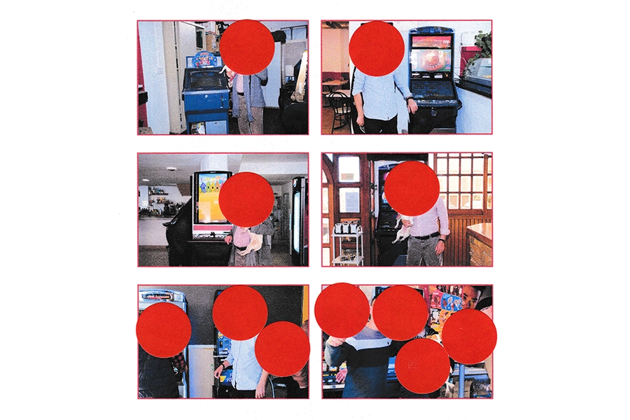
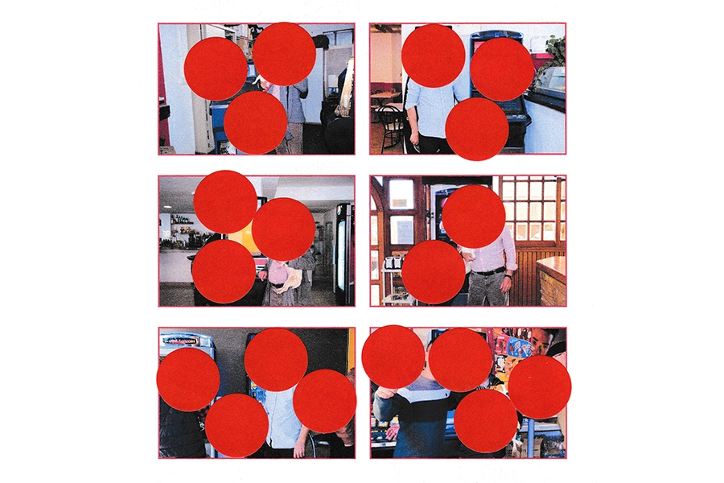
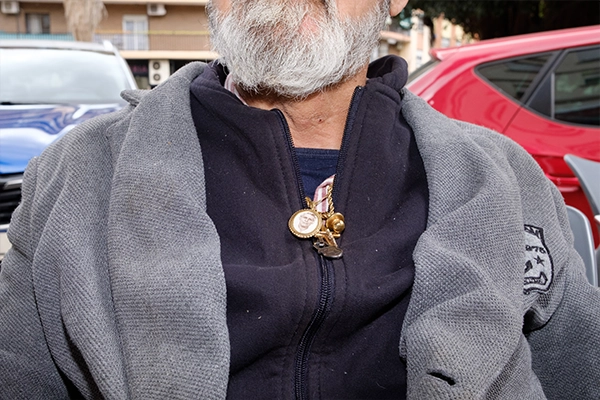

Catálogo de lo que puedo mostrar

Catálogo de lo que puedo mostrar

Catálogo de lo que puedo mostrar

Catálogo de lo que puedo mostrar

Catálogo de lo que puedo mostrar
2024
"Catálogo de lo que puedo mostrar" es un proyecto que
retrata el entorno de Vicente, dueño de una empresa de máquinas
tragaperras. Retraté su vida, trabajo y máquinas. Para cuidar su
intimidad dejé pequeños detalles de él que pudiesen contar su historia